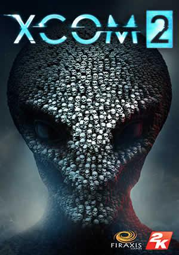

ABOUT THIS GAME
XCOM 2 is the sequel to XCOM: Enemy Unknown, the 2012 award-winning strategy game of the year. Earth has changed. Twenty years have passed since world leaders offered an unconditional surrender to alien forces. XCOM, the planet’s last line of defense, was left decimated and scattered. Now, in XCOM 2, the aliens rule Earth, building shining cities that promise a brilliant future for humanity on the surface, while concealing a sinister agenda and eliminating all who dissent from their new order. Only those who live at the edges of the world have a margin of freedom. Here, a force gathers once again to stand up for humanity. Always on the run, and facing impossible odds, the remnant XCOM forces must find a way to ignite a global resistance, and eliminate the alien threat once and for all.
SYSTEM REQUIREMENTS
OS: Windows® 7, 64-bit
Processor: Intel Core 2 Duo E4700 2.6 GHz or AMD Phenom 9950 Quad Core 2.6 GHz
Memory: 4 GB RAM
Graphics: 1GB ATI Radeon HD 5770, 1GB NVIDIA GeForce GTX 460 or better
DirectX: Version 11
Storage: 45 GB available space
Sound Card: DirectX compatible sound card
Additional Notes: Initial installation requires one-time Internet connection for Steam authentication; software installations required (included with the game) include Steam Client, Microsoft Visual C++2012 and 2013 Runtime Libraries and Microsoft DirectX.